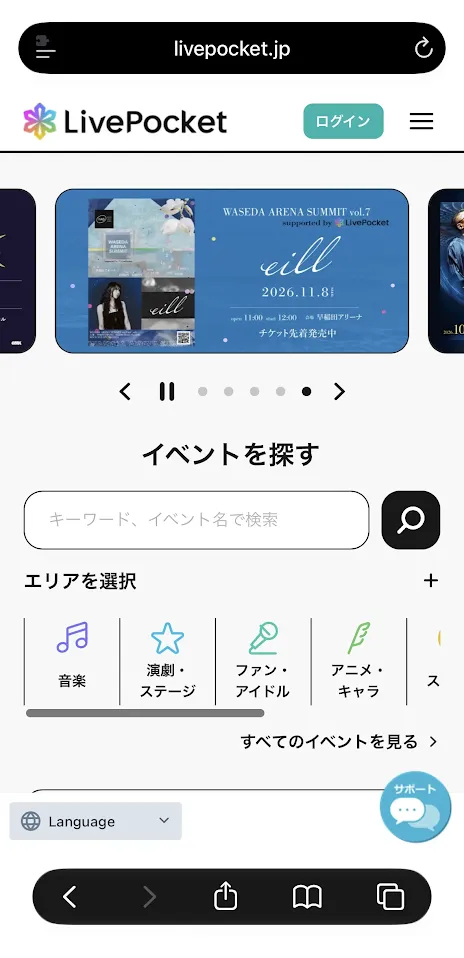
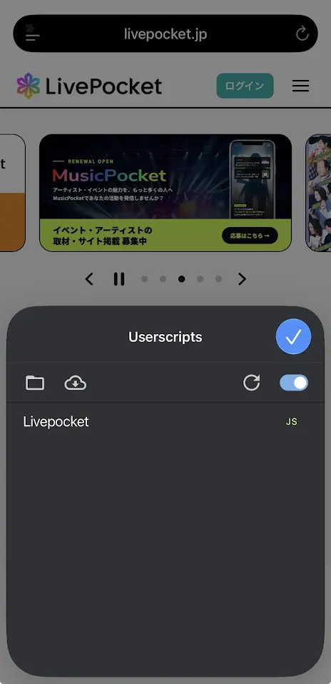

01
Userscriptsをインストール
App StoreからUserscriptsをインストールします。

アプリのインストールから、スクリプトを使う準備まで順番に進めてください。
App StoreからUserscriptsをインストールします。
指定のZIPファイルを「ファイル」アプリの このiPhone内 ＞ Userscripts フォルダに保存します。


iPhoneの「設定」からSafariの拡張機能を開き、Userscriptsをオンにします。


スクリプトを実行したいサイトをSafariで開き、URLバー横の🧩ボタンからUserscriptsを確認します。


以上でUserscriptsを使う準備は完了です。
画面表示はiOSのバージョンによって異なる場合があります。